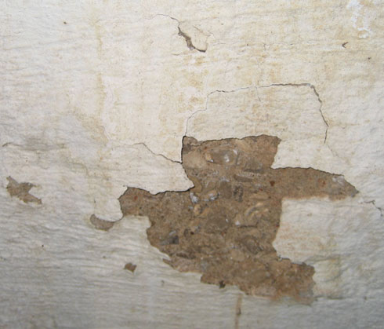
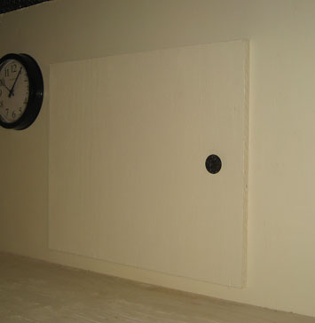

Someone had made a lame attempt at painting in the past but
gave up fairly quickly.
When I decided to paint, I stayed the course and did the whole thing.


The view as you start down the stairs from the kitchen.


This view includes the busted step that Eric fixed.


The view as you approach the basement used to be of the
furnace.
We hired our friend DJ to build a closet around it for us which looks much
better.


The furnace area pre- and post-closet. Big
improvement!
My friend Noel helped us get rid of that drain pipe you see that used to run
across the floor.


Facing the east wall - it used to be nothing but flimsy,
dirty paneling. It was nailed up every which way.
This was also an access point to the crawl space but to use it you had to
unscrew about 8 screws.
Eric framed in a wall, put up drywall, built a door for the
crawl space, built sturdy shelves, and added an
access point for the water shutoff. This was his first experience with
most of these skills but he did great!


This shows the 2nd of three crawl space access points.
All 3 of them
required removing a bunch of screws each time you wanted to use
it.
My friend Noel re-arranged the pipes for us, Eric built the access door, and I stained and finished it.


Water used to pour in that window like a river. This whole area was too gross for words.
We had one of the pipes replaced and I I used rust dissolver
and elbow grease to scrub the other one.
I scraped the walls with a chisel to knock off the loose bits, then
put on two coats of Drylock to seal the walls, and painted everything.
Eric "YouTubed" a how-two on masonry and totally
bricked in the window & window well, and
moved the dryer vent to this area (which is under the deck so not seen from
outside.)
Our friend DJ put in the hanging ceiling and added fluorescent lights as well.


This is a close-up of what the walls looked like before I
went after them with my 1" chisel.
The chisel did not survive the experience and I was feeling a little used up
as well.
Close-up of the crawl space access on the east wall.


This shows how awful those pipes looked before. On the right you see the inside part of Eric's masonry work.


This used to be the only plug-in in the entire
basement. Our electrician friend Dale put in some wall sockets for us.
There was only so much we could do with the pipes coming down, so we made the
best of it by just painting them.


These blue things had been the only shelves in the
basement. They were rotten, sagging, narrow, and generally gross.
Eric built me new ones based on the size of the giant plastic tubs I love to
use. (Notice how nicely labeled they are?!)


This duct work hung way down so that you had to duck to get
under it.
(Yes, I thought that was ironic the first 3 or 4 times, then it got
old.)
I got pink insulation in my hair every time I went into the basement.
We decided we could live without that vent in order to have a more normal
ceiling.
Another thing I haven't mentioned yet were the
floors.
They had been painted an ugly gray but since there was so much water flowing
in there,
most of the paint was chipped, worn, and looked awful. I spent hours and
hours
down there with paint stripper and my friend Noel's floor scraper, trying to
get all the junk off the floor.
Then I cleaned it really good and put a sealant on there. It isn't
perfect, but it was a big improvement.


This was the second window on the north wall. Nice,
huh?
Except for my getting stain on the caulk around the window,
the new situation is a great improvement.


There was some kind of half-hearted structure for the hot
water heater before.
Who knows what they were thinking. The tank had a big, rusty bulge on
the
side that we probably should have fussed about during the inspection.
At any rate, we just got a new one and let it be tucked behind the furnace closet.


Disturbing image of the window on the west wall. Nast-y!

non-disgusting replacement.
The windows were done by
our buddy Dub.


This is the 3rd crawl space access that Eric replaced with a nice door. Much better!
We finished up the basement three whole months before we sold the house. We may not have enjoyed it for long, but at least we learned a lot of skills in the process!